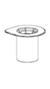
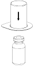
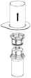
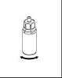
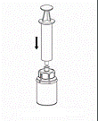
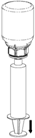

RÉSUMÉ DES CARACTÉRISTIQUES DU PRODUIT
ANSM - Mis à jour le : 07/03/2014
1. DENOMINATION DU MEDICAMENT
CONFIDEX 500 UI, poudre et solvant pour solution injectable
2. COMPOSITION QUALITATIVE ET QUANTITATIVE
CONFIDEX se présente sous forme d’une poudre et d’un solvant pour solution injectable contenant du complexe prothrombique humain. Le produit contient nominalement les quantités suivantes (UI) de facteurs de coagulation humains :
|
Composants
|
Après reconstitution (UI/ml)
|
CONFIDEX 500 UI quantité par flacon (UI)
|
|
Substances actives
|
|
|
|
Facteur II de coagulation humain
|
20 – 48
|
400 – 960
|
|
Facteur VII de coagulation humain
|
10 – 25
|
200 – 500
|
|
Facteur IX de coagulation humain
|
20 – 31
|
400 – 620
|
|
Facteur X de coagulation humain
|
22 – 60
|
440 – 1200
|
|
Autres composants actifs
|
|
|
|
Protéine C
|
15 – 45
|
300 – 900
|
|
Protéine S
|
12 – 38
|
240 – 760
|
La quantité totale de protéine par flacon est de 6 – 14 mg/ml de solution reconstituée.
L’activité spécifique du facteur IX est de 2,5 UI par mg de protéine totale.
Les activités de tous les facteurs de coagulation, ainsi que de la protéine C et S ont été déterminées conformément aux standards de l’OMS.
Excipients à effet notoire :
Sodium jusqu’à 343 mg (environ 15 mmol) par 100 ml de solution.
Pour la liste complète des excipients, voir rubrique 6.1.
3. FORME PHARMACEUTIQUE
Poudre et solvant pour solution injectable.
Poudre blanche ou légèrement colorée ou solide friable.
4. DONNEES CLINIQUES
4.1. Indications thérapeutiques
· Traitement et prophylaxie péri-opératoire des hémorragies dans les cas de déficit acquis en facteurs de coagulation du complexe prothrombique, comme le déficit dû à un traitement par anti-vitamine K, ou en cas de surdosage en anti-vitamine K, lorsqu’une correction rapide du déficit s’avère nécessaire.
· Traitement et prophylaxie péri-opératoire des hémorragies dans les cas de déficit congénital de l’un des facteurs de coagulation vitamine K dépendants, lorsque le facteur de coagulation spécifique purifié n’est pas disponible.
4.2. Posologie et mode d'administration
Posologie
Les posologies recommandées ci-dessous sont données à titre indicatif. Le traitement doit être initié sous la surveillance d'un médecin spécialiste des troubles de la coagulation. La posologie et la durée du traitement de substitution dépendent de la sévérité du trouble, de la localisation et de l'étendue de l'accident hémorragique, ainsi que de l'état clinique du patient.
La dose et la fréquence d'administration doivent être calculées sur la base de chaque cas individuel. L'intervalle entre les administrations doit être adapté en fonction des demi-vies des différents facteurs de coagulation du complexe prothrombique (voir rubrique 5.2). La posologie individuelle nécessaire peut uniquement être déterminée sur la base des évaluations régulières des taux plasmatiques du facteur de coagulation à corriger ou sur la base d’un test global évaluant le taux de complexe prothrombique (temps de Quick, INR), et en fonction d’un suivi régulier de l’état clinique du patient.
Dans le cas d'interventions chirurgicales majeures, il est essentiel de réaliser un suivi précis du traitement de substitution à l'aide de tests de coagulation (tests spécifiques évaluant les facteurs de coagulation et/ou test global évaluant le taux de complexe prothrombique).
· Traitement et prophylaxie péri-opératoire des hémorragies lors d'un traitement par anti-vitamine K.
La dose dépendra de l’INR avant traitement et de l’INR cible. Le tableau suivant indique les doses approximatives (ml/kg de poids corporel de produit reconstitué et UI de FIX/kg de poids corporel) requises dans le cadre de la correction de l’INR (par ex. ≤ 1,3) pour des taux d’INR initiaux différents.
|
INR initial
|
2,0 – 3,9
|
4,0 – 6,0
|
> 6,0
|
|
Dose approximative en ml/kg de poids corporel
|
1
|
1,4
|
2
|
|
Dose approximative de facteur IX en UI/kg de poids corporel
|
25
|
35
|
50
|
Il est recommandé pour la dose maximale unique de ne pas excéder 5000 UI de FIX.
La correction de l’altération d’une hémostase normale par l’anti-vitamine K est obtenue au plus tard 30 minutes après l'injection et dure environ 6 à 8 heures. Toutefois, les effets de la vitamine K, si elle est administrée simultanément, sont habituellement obtenus en 4 à 6 heures. Aussi, un traitement répété par le complexe prothrombique humain n’est généralement pas nécessaire lorsque la vitamine K a été administrée.
Ces recommandations reposent sur les données d’études cliniques menées chez un nombre limité de sujets. La récupération et la durée de l’effet peuvent varier, et le suivi de l’INR est donc obligatoire au cours du traitement.
· Traitement et prophylaxie péri-opératoire des hémorragies dans les cas de déficit congénital de l’un des facteurs de coagulation vitamine K dépendants, lorsque le facteur de coagulation spécifique purifié n’est pas disponible.
Le calcul de la dose requise de concentré de complexe prothrombique repose sur des données issues d’études cliniques :
· ● 1 UI de facteur IX par kg de poids corporel est supposée augmenter l’activité facteur IX plasmatique de 1,3 % (0,013 UI/ml) par rapport à la normale
· ● 1 UI de facteur VII par kg de poids corporel augmente l’activité facteur VII plasmatique de 1,7 % (0,017 UI/ml) par rapport à la normale
· ● 1 UI de facteur II par kg de poids corporel augmente l’activité facteur II plasmatique de 1,9 % (0,019 UI/ml) par rapport à la normale
· ● 1 UI de facteur X par kg de poids corporel augmente l’activité facteur X plasmatique de 1,8 % (0,018 UI/ml) par rapport à la normale.
La posologie d'un facteur spécifique administré est exprimée en Unités Internationales (UI) par rapport au standard de l'OMS en vigueur pour chaque facteur. L'activité plasmatique d’un facteur de coagulation spécifique est exprimée soit en pourcentage (de l’activité normale du plasma humain), soit en Unités Internationales (par rapport à l’étalon international pour le facteur de coagulation spécifique).
Une Unité Internationale (UI) de l'activité d’un facteur de coagulation correspond à la quantité de ce facteur contenue dans un ml de plasma humain normal.
Par exemple, le calcul de la dose requise de facteur X repose sur des observations montrant qu’une unité internationale (UI) de facteur X par kg de poids corporel augmente l’activité du facteur X plasmatique de 0,018 UI/ml.
La posologie requise est déterminée en utilisant la formule suivante :
Nombre d'unités requises = poids corporel (kg) x augmentation de facteur X souhaitée (UI/ml) x 56 où 56 (ml/kg) correspond à l’inverse de la récupération estimée.
Si la récupération individuelle est connue, cette valeur doit être utilisée pour le calcul.
Population pédiatrique
La sécurité et l’efficacité de CONFIDEX chez les enfants et les adolescents n'a pas encore été établie dans des études cliniques contrôlées (voir rubriques 4.4 et 5.2).
Personnes âgées
La posologie et le mode d’administration chez les personnes âgées (> 65 ans) sont identiques aux recommandations générales.
Mode d'administration
Pour obtenir les instructions sur la reconstitution du médicament avant administration, voir rubrique 6.6. La solution reconstituée doit être administrée par voie intraveineuse (ne pas excéder 3 UI/kg/minute, maximum : 210 UI/minute, approximativement 8 ml/minute).
4.3. Contre-indications
Hypersensibilité connue à la substance active ou à l’un des excipients mentionnés à la rubrique 6.1.
En cas de coagulation intravasculaire disséminée, les préparations à base de complexe prothrombique ne peuvent être uniquement administrées qu’après la fin de la phase de consommation.
Antécédent de thrombocytopénie induite par l’héparine.
4.4. Mises en garde spéciales et précautions d'emploi
L’avis d’un spécialiste expérimenté dans la prise en charge des troubles de la coagulation doit être demandé.
Chez les patients atteints d’un déficit acquis en facteurs de coagulation vitamine K dépendants (par exemple, induit par un traitement par anti-vitamine K), CONFIDEX ne doit être administré qu’en cas de nécessité de corriger rapidement les taux du complexe prothrombique, comme en cas d’hémorragie majeure ou d’intervention chirurgicale urgente. Dans d’autres cas, une réduction de la dose de l’anti-vitamine K et/ou l’administration de vitamine K est habituellement suffisante.
Les patients recevant des anti-vitamines K peuvent se trouver dans un état d’hypercoagulabilité sous-jacent et la perfusion de complexe prothrombique humain est susceptible d’exacerber cet état.
Dans les cas de déficit congénital en l’un des facteurs vitamine K dépendants, il convient d’utiliser les produits de facteurs de coagulation spécifiques lorsqu’ils sont disponibles.
En cas de réaction allergique ou de type anaphylactique, l’administration de CONFIDEX devra être immédiatement interrompue (c’est-à-dire, arrêt de l’injection) et un traitement approprié doit être initié. Les mesures thérapeutiques dépendent du type et de la sévérité de l’effet indésirable. Le traitement médical standard de l’état de choc doit être respecté.
Il existe un risque de thrombose ou de coagulation intravasculaire disséminée lorsque les patients présentant un déficit congénital ou acquis sont traités par le complexe prothrombique humain, particulièrement en cas d’administrations répétées. Ce risque est plus important dans le cas du traitement d'un déficit isolé en facteur VII, puisque les autres facteurs de coagulation vitamine K dépendants, présentant des demi-vies plus longues, peuvent s’accumuler jusqu’à des taux beaucoup plus élevés que la normale. Les patients traités par un complexe prothrombique humain doivent être surveillés étroitement pour détecter les signes ou symptômes évocateurs d'une coagulation intravasculaire disséminée ou d'une thrombose.
En raison du risque de complications thromboemboliques, un suivi étroit doit être réalisé lorsque CONFIDEX est administré aux patients présentant des antécédents de maladie coronarienne ou d’infarctus du myocarde, aux patients atteints de pathologies hépatiques, aux patients en période péri ou postopératoire, aux nouveau-nés ou aux patients présentant un risque de manifestations thromboemboliques ou de coagulation intravasculaire disséminée ou un déficit concomitant en inhibiteur.
Dans chacune de ces situations, le bénéfice potentiel du traitement par CONFIDEX doit être évalué par rapport au risque éventuel de complications de ce type. Pour les patients septiques avec coagulation intravasculaire disséminée, l’administration d’antithrombine III doit être envisagée avant traitement par CONFIDEX.
Chez les patients présentant une coagulation intravasculaire disséminée, il peut être nécessaire, dans certaines circonstances, d’instaurer un traitement substitutif par facteurs de la coagulation du complexe prothrombique. Cependant, ce traitement ne peut être instauré qu’après la fin de la phase de consommation (par traitement de la cause sous-jacente, normalisation persistante du taux d’antithrombine III).
Lorsque CONFIDEX est utilisé pour normaliser les troubles de la coagulation, l’administration prophylactique d’héparine doit être envisagée.
Aucune information n’est disponible sur l’utilisation de CONFIDEX en cas d'hémorragie périnatale due à un déficit en vitamine K du nouveau-né.
CONFIDEX contient jusqu’à 343 mg de sodium (environ 15 mmol) par 100 ml. Cette quantité est à prendre en compte chez les patients suivant un régime alimentaire avec apport contrôlé de sodium.
Sécurité virale
Les mesures habituelles de prévention du risque de transmission d’agents infectieux par les médicaments préparés à partir de sang ou de plasma humain comprennent la sélection clinique des donneurs, la recherche des marqueurs spécifiques d’infection sur chaque don et sur les mélanges de plasma ainsi que la mise en œuvre dans le procédé de fabrication d’étapes pour l’inactivation/élimination virale. Cependant, lorsque des médicaments préparés à partir de sang ou de plasma humain sont administrés, le risque de transmission d’agents infectieux ne peut pas être totalement exclu. Ceci s’applique également aux virus inconnus ou émergents ou autres types d’agents infectieux.
Les mesures prises sont considérées comme efficaces vis-à-vis des virus enveloppés tels que le virus de l'immunodéficience humaine (VIH), le virus de l’hépatite B (VHB)et le virus de l’hépatite C (VHC) et le virus non-enveloppé de l’hépatite A .Les mesures prises peuvent être d’efficacité limitée vis-à-vis des virus non-enveloppés tels que le parvovirus B19.Une infection à parvovirus B19 peut être grave chez une femme enceinte (infection fœtale) et chez les sujets immunodéficients ou présentant un accroissement de l’érythropoïèse (par ex. anémie hémolytique).
Une vaccination appropriée (hépatite A et B) doit être envisagée chez les patients recevant régulièrement ou de façon répétée des médicaments à base de complexes prothrombiques dérivés du plasma humain.
4.5. Interactions avec d'autres médicaments et autres formes d'interactions
Le complexe prothrombique humain neutralise les effets d'un traitement par anti-vitamines K, mais aucune interaction avec d’autres spécialités pharmaceutiques n'est connue.
Lors de la réalisation de tests de la coagulation sensibles à l’héparine chez un patient recevant des doses élevées de complexe prothrombique humain, l’héparine entrant dans la constitution du produit administré doit être prise en compte.
4.6. Grossesse et allaitement
Grossesse et allaitement
La sécurité du complexe prothrombique humain lors de l'utilisation chez la femme enceinte et lors de l'allaitement n’a pas été établie. Les études chez l’animal ne permettent pas de statuer sur la sécurité d’utilisation pendant la grossesse, le développement embryo-fœtal, l’accouchement ou le développement post-natal.
Ainsi, le complexe prothrombique humain ne doit être utilisé au cours de la grossesse et de l’allaitement qu’en cas d’indication absolue.
Fertilité
Aucune donnée sur la fertilité n’est disponible.
4.7. Effets sur l'aptitude à conduire des véhicules et à utiliser des machines
Aucune étude des effets sur l’aptitude à conduire des véhicules et à utiliser des machines n’a pas été réalisée.
4.8. Effets indésirables
Les réactions indésirables suivantes sont basées sur l'expérience post-commercialisation ainsi que sur la littérature scientifique.
Affections du système immunitaire
Des réactions d’hypersensibilité ou allergiques (pouvant inclure angioedèmes, des sensations de brûlure et de picotements au site d’injection, frissons, bouffées vasomotrices, urticaire généralisé, céphalées, urticaire, hypotension, léthargie, nausées, agitation, tachycardie, angor, picotements, vomissements ou râles sibilants) ont été observées dans de très rares cas chez des patients traités par des produits contenant le facteur IX. Dans certains cas, ces réactions ont progressé jusqu’à une anaphylaxie sévère et elles sont survenues en étroite relation temporelle avec l’apparition d’inhibiteurs du facteur IX (voir rubrique 4.4).
En cas de survenue d'une réaction de type allergique ou anaphylactique, l'administration de CONFIDEX doit immédiatement être arrêtée (c’est-à-dire stopper l'injection) et un traitement adéquat doit être instauré (voir rubrique 4.4).
Des anticorps dirigés contre un ou plusieurs facteurs du complexe prothrombique peuvent apparaître dans de très rares cas. L’apparition de ces inhibiteurs se manifeste par une mauvaise réponse clinique. En ce cas, il est recommandé de consulter un centre spécialisé dans le traitement de l’hémophilie.
Les réactions indésirables peuvent inclure le développement d’une thrombocytopénie induite par l’héparine, de type II (TIH, type II). Les signes caractéristiques d’une TIH sont une diminution de la numération plaquettaire de plus de 50 % et/ou l’apparition de complications thromboemboliques nouvelles ou inexpliquées durant le traitement par héparine. Les symptômes débutent généralement 4 à 14 jours après le début du traitement par héparine, mais ils peuvent apparaître également dans les 10 heures chez des patients ayant reçu récemment de l’héparine (dans les 100 jours précédents).
Troubles généraux et anomalies au site d’administration
Augmentation de la température corporelle dans de très rares cas.
Affections vasculaires
Il existe un risque d’épisodes thromboemboliques suite à l’administration du complexe prothrombique humain (voir rubrique 4.4).
Affections du rein et des voies urinaires
Des cas isolés de syndrome néphrotique ont été rapportés à la suite de tentatives d’induction d’une tolérance immune chez des patients atteints d’une hémophilie B avec inhibiteurs du facteur IX et antécédents de réaction allergique.
Pour les informations relatives au risque infectieux, voir rubrique 4.4.
Déclaration des effets indésirables suspectés
La déclaration des effets indésirables suspectés après autorisation du médicament est importante. Elle permet une surveillance continue du rapport bénéfice/risque du médicament. Les professionnels de santé déclarent tout effet indésirable suspecté via le système national de déclaration : Agence nationale de sécurité du médicament et des produits de santé (Ansm) et réseau des Centres Régionaux de Pharmacovigilance - Site internet: www.ansm.sante.fr.
4.9. Surdosage
Afin d’éviter un surdosage, un bilan régulier de coagulation est indiqué au cours du traitement, car l’administration de doses élevées de concentré de complexe prothrombique (surdosage) a été associée à des cas d’infarctus du myocarde, de coagulation intravasculaire disséminée, de thrombose veineuse et d’embolie pulmonaire. En cas de surdosage, le risque de complication thromboembolique ou de coagulation intravasculaire disséminée est accru chez les patients à risque vis-à-vis de ces complications.
5. PROPRIETES PHARMACOLOGIQUES
5.1. Propriétés pharmacodynamiques
Classe pharmacothérapeutique : antihémorragiques, facteurs de coagulation II, VII et X en association, code ATC : B02BD01
Les facteurs de la coagulation II, VII, IX et X, qui sont synthétisés dans le foie grâce à la vitamine K, sont communément appelés complexe prothrombique. En plus des facteurs de la coagulation, CONFIDEX contient de la protéine C et de la protéine S, inhibiteurs de la coagulation dépendant de la vitamine K.
Le facteur VII est le zymogène du facteur VIIa, sérine protéase active par laquelle la voie extrinsèque de la coagulation sanguine est initiée. Le complexe facteur thromboplastine tissulaire/facteur VIIa active les facteurs IX et X de la coagulation, ce qui donne naissance aux facteurs IXa et Xa. Au cours de l'activation de la cascade de la coagulation, la prothrombine (facteur II) est activée et transformée en thrombine. Sous l’action de la thrombine, le fibrinogène est converti en fibrine, ce qui résulte en la formation du caillot. Une production normale de thrombine est également d'une importance capitale pour la fonction plaquettaire dans le cadre de l'hémostase primaire.
Un déficit sévère isolé en facteur VII aboutit à une réduction de la formation de thrombine et à une tendance hémorragique due à une altération de la formation de fibrine et de l'hémostase primaire. Un déficit isolé en facteur IX est l’une des formes classiques de l'hémophilie (hémophilie B). Le déficit isolé en facteur II ou X est très rare mais, dans sa forme sévère, est la cause d’une tendance hémorragique similaire à celle observée dans l’hémophilie classique.
Les autres substances, les protéines C et S inhibitrices de la coagulation, sont également synthétisées par le foie. L’activité biologique de la protéine C est renforcée par la protéine S, qui est son cofacteur.
La protéine C activée inhibe la coagulation en inactivant les facteurs Va et VIIIa. La protéine S, à titre de cofacteur de la protéine C, renforce l'inactivation de la coagulation. Un déficit en protéine C est associé à un accroissement du risque de thrombose.
Un déficit acquis en facteurs de la coagulation dépendant de la vitamine K survient lors d’un traitement par anti- vitamine K. Si ce déficit devient sévère, une tendance hémorragique également sévère apparaît et se caractérise par des saignements rétro-péritonéaux ou cérébraux plutôt que par des hémorragies musculaires et articulaires. Une insuffisance hépatique sévère induit également une forte réduction du taux des facteurs de la coagulation dépendant de la vitamine K et une tendance hémorragique cliniquement significative. Toutefois, le processus est souvent complexe en raison d’une coagulation intravasculaire simultanée continue, d’un faible taux de plaquettes, d’un déficit en inhibiteurs de la coagulation et d’une perturbation de la fibrinolyse.
L’administration du complexe prothrombique humain permet d’augmenter le taux plasmatique des facteurs de la coagulation dépendant de la vitamine K et peut transitoirement corriger l’anomalie de la coagulation chez les patients présentant un déficit en un ou plusieurs de ces facteurs.
5.2. Propriétés pharmacocinétiques
Les demi-vies sont indiquées ci-dessous (données provenant d’une étude clinique chez 15 volontaires sains; valeur médiane (extrêmes)) :
|
Facteur II :
|
60
|
(25 – 135) heures
|
|
Facteur VII:
|
4
|
(2 – 9) heures
|
|
Facteur IX :
|
17
|
(10 – 127) heures*
|
|
Facteur X :
|
31
|
(17 – 44) heures
|
|
Protéine C :
|
47
|
(9 – 122) heures*
|
|
Protéine S :
|
49
|
(33 – 83) heures*
|
*demi-vie terminale ; modèle à deux compartiments
CONFIDEX est distribué et métabolisé dans l’organisme de la même façon que les facteurs II, VII, IX et X endogènes de la coagulation.
Le produit étant administrée par voie intraveineuse, sa biodisponibilité est immédiate et proportionnelle à la dose administrée.
5.3. Données de sécurité préclinique
Les substances actives de CONFIDEX sont les facteurs du complexe prothrombique (facteurs II, VII, IX et X). Ils sont dérivés du plasma humain et agissent comme des composantes endogènes du plasma.
Les études toxicologiques après administration unique du produit précédent pasteurisé, mais non nanofiltré, ont montré une toxicité modérée chez la souris après administration de 200 UI/kg, dose maximale testée. Des études précliniques d’administration répétées (toxicité chronique, potentiel cancérogène et toxicité pour la reproduction) ne peuvent être réalisées dans des modèles animaux en raison de l’apparition d’anticorps suite à l’administration de protéines humaines hétérologues.
La tolérance locale de CONFIDEX injecté par voie intraveineuse a été établie chez le lapin. Une étude de la néoantigénicité chez le lapin n’a révélé aucun signe de production d’un néoépitope dû au processus de pasteurisation.
6. DONNEES PHARMACEUTIQUES
6.1. Liste des excipients
Poudre : héparine, albumine humaine, antithrombine III humaine, chlorure de sodium, citrate de sodium, acide chlorhydrique ou hydroxyde de sodium (pour ajustement du pH).
Solvant : eau pour préparations injectables.
6.2. Incompatibilités
CONFIDEX ne doit pas être mélangé avec d’autres médicaments, diluants ou solvants.
6.3. Durée de conservation
3 ans.
CONFIDEX ne contenant pas de conservateur il doit être utilisé immédiatement après reconstitution pour des raisons microbiologiques. La stabilité physico-chimique a été démontrée pendant 24 heures à température ambiante (jusqu’à un maximum de 25 °C). S’il n’est pas administré immédiatement, la durée de conservation ne doit pas dépasser 8 heures à température ambiante.
6.4. Précautions particulières de conservation
A conserver à une température ne dépassant pas 25 °C.
Ne pas congeler. Conserver le flacon dans l'emballage extérieur à l'abri de la lumière.
Pour les conditions de conservation après reconstitution du médicament, voir rubrique 6.3.
6.5. Nature et contenu de l'emballage extérieur
Poudre en flacon (verre incolore de type I) muni d'un bouchon (caoutchouc) et d'un sertissage (aluminium) avec un opercule de type « flip off » (plastique) + 10 ml de solvant (eau pour préparations injectables) en flacon pour injection (verre incolore de type I) muni d'un bouchon pour perfusion (caoutchouc) et d'un sertissage (aluminium) avec un opercule de type « flip off » (plastique), fourni avec un dispositif de transfert 20/20 muni d'un filtre.
Toutes les présentations peuvent ne pas être commercialisées.
6.6. Précautions particulières d’élimination et de manipulation
Tout produit médicamenteux non utilisé ou déchet doit être éliminé conformément à la réglementation en vigueur.
Mode d’administration
Instructions générales
· La solution doit être limpide ou légèrement opalescente. Après filtration et prélèvement (voir plus bas), la solution reconstituée doit être inspectée visuellement afin de mettre en évidence la présence de particules éventuelles ou un changement de coloration éventuel avant l’administration.
· Ne pas utiliser une solution trouble ou contenant des dépôts.
· La reconstitution et le prélèvement doivent être effectués dans des conditions aseptiques.
Reconstitution
Amener le solvant à température ambiante. S’assurer que les capuchons protecteurs des flacons de poudre et de solvant sont retirés et que les bouchons sont nettoyés avec une solution antiseptique puis laisser sécher avant l’ouverture de l’emballage du Mix2vial.
|
1
|
1. Ouvrir l’emballage du Mix2Vial en retirant l’opercule. Ne retirez pas le Mix2Vial de l'emballage blister!
|
|
2
|
2. Placer le flacon de solvant sur une surface plane et propre et le maintenir fermement. En tenant le dispositif Mix2Vial à travers son emballage blister, pousser l’extrémité bleue tout droit à travers le bouchon du flacon de solvant.
|
|
3
|
3. Retirer avec précaution l’emballage blister du dispositif Mix2Vial en maintenant le bord du dispositif et en tirant verticalement vers le haut. Bien s’assurer que seul cet emballage est retiré, et que le dispositif Mix2Vial reste bien en place.
|
|
4
|
4. Poser le flacon de produit sur une surface plane et rigide. Retourner l’ensemble flacon de solvant-dispositif Mix2Vial et pousser sa partie transparente tout droit à travers le bouchon du flacon de produit. Le solvant coule automatiquement dans le flacon de poudre.
|
|
 5 5
|
5. En maintenant la partie produit reconstitué d’une main et la partie solvant de l’autre, séparer soigneusement les flacons en dévissant le dispositif Mix2Vial.
Jeter le flacon de solvant avec l’adaptateur Mix2Vial bleu attaché.
|
|
6
|
6. Agiter délicatement le flacon de produit avec l’adaptateur transparent attaché jusqu’à ce que la substance soit totalement dissoute. Ne pas secouer.
|
|
7
|
7. Remplir d’air une seringue stérile vide. Tout en maintenant verticalement le flacon de produit reconstitué, connecter la seringue au Luer Lock du dispositif Mix2Vial. Injecter l’air dans le flacon de produit.
|
Prélèvement et administration
|
8
|
8. En maintenant le piston de la seringue appuyé, retourner l’ensemble et prélever la solution dans la seringue en tirant lentement sur le piston.
|
|
9
|
9. Une fois la solution transférée dans la seringue, tenir le corps de la seringue fermement (piston dirigé vers le bas) et déconnecter le dispositif adaptateur transparent Mix2Vial de la seringue.
|
Veiller à ce que du sang ne pénètre pas dans la seringue remplie de produit en raison d'un risque de coagulation dans la seringue et d'administration de caillots de fibrine au patient.
La solution reconstituée doit être administrée par une ligne d’injection/perfusion dédiée.
Il faut prendre soin de ne pas dépasser la vitesse de perfusion maximale recommandée (ne pas excéder 3 UI/kg/minute, maximum : 210 UI/minute, approximativement 8 ml/minute).
7. TITULAIRE DE L’AUTORISATION DE MISE SUR LE MARCHE
CSL BEHRING GMBH
EMIL VON BEHRING STRASSE 76
35041 MARBURG
ALLEMAGNE
8. NUMERO(S) D’AUTORISATION DE MISE SUR LE MARCHE
· 574 029-1 ou 34009 574 029 1 4: Poudre en flacon (verre incolore de type I) muni d'un bouchon (caoutchouc) + 10 ml de solvant (eau pour préparations injectables) en flacon (verre incolore de type I) muni d'un bouchon (caoutchouc) + un dispositif de transfert.
9. DATE DE PREMIERE AUTORISATION/DE RENOUVELLEMENT DE L’AUTORISATION
[à compléter par le titulaire]
10. DATE DE MISE A JOUR DU TEXTE
[à compléter par le titulaire]
11. DOSIMETRIE
Sans objet.
12. INSTRUCTIONS POUR LA PREPARATION DES RADIOPHARMACEUTIQUES
Sans objet.
Liste I.
Médicament soumis à prescription hospitalière.